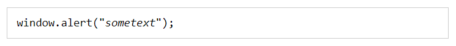
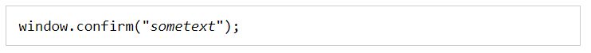
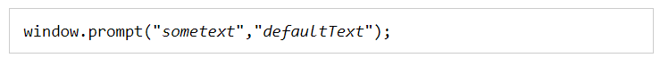

__________________________________________________________________________________________________________________________________________________
JavaScript has three kind of popup boxes: Alert box, Confirm box, and Prompt box.
Alert Box
An alert box is often used if you want to make sure information comes through to the user.
When an alert box pops up, the user will have to click "OK" to proceed.
Syntax:
The window.alert() method can be written without the window prefix.
Example: https://www.w3schools.com/js/tryit.asp?filename=tryjs_alert
__________________________________________________________________________________________________________________________________________________
Confirm Box
A confirm box is often used if you want the user to verify or accept something.
When a confirm box pops up, the user will have to click either "OK" or "Cancel" to proceed.
If the user clicks "OK", the box returns true. If the user clicks "Cancel", the box returns false.
Syntax:
The window.confirm() method can be written without the window prefix.
Example: https://www.w3schools.com/js/tryit.asp?filename=tryjs_confirm
__________________________________________________________________________________________________________________________________________________
Prompt Box
A prompt box is often used if you want the user to input a value before entering a page.
When a prompt box pops up, the user will have to click either "OK" or "Cancel" to proceed after entering an input value.
If the user clicks "OK" the box returns the input value. If the user clicks "Cancel" the box returns null.
Syntax:
The window.prompt() method can be written without the window prefix.
Example: https://www.w3schools.com/js/tryit.asp?filename=tryjs_prompt